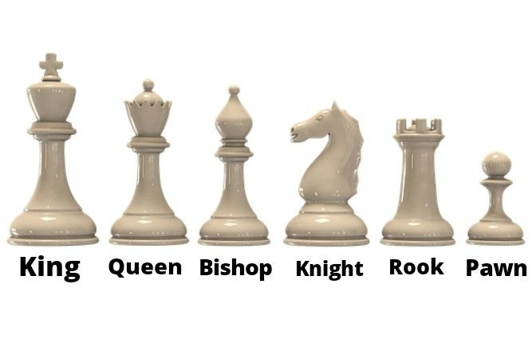
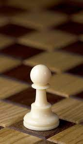
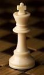

<
Chess a unique set of 5 chess pieces on each side which are to be moved following their own set of etiquette.

PAWNS

Pawn in its original form is the weakest chess yet most unique piece in the game .
it can move only the single front square . It captures diagonally and can go two steps first
on the first move only(if the piece was not moved before ).It can promote to any piece once it reaches the other end of the board.
It also can perform a special monovere called"en-passant". It is denoted by nothing in chess which means only the square can be written to denote a pawn . Its value is 1
KNIGHT
.jpg) Denoting a medievial warrior riding a horse the knight is the
only chess piece which is able to jump ove pieces . It moves in an 'L' shape .
It is denoted by 'N' infront of a square it has moves in .so, if it moves to e4 we call it
as Ne4 . It is valued in about 3 points. It is ashort ranged piece which can be really
tricky especially to begineers
Denoting a medievial warrior riding a horse the knight is the
only chess piece which is able to jump ove pieces . It moves in an 'L' shape .
It is denoted by 'N' infront of a square it has moves in .so, if it moves to e4 we call it
as Ne4 . It is valued in about 3 points. It is ashort ranged piece which can be really
tricky especially to begineers
BISHOP
.jpg) Denoting a pstor of the medieval period the bishop is a long ranged
chess piece . It moves diagonally in an 'X' shape . its ability to move diagonally means that the bishop can only travel in squares
of 1 color. for example white bishop of both siides can only travel on white squares and can never be on black squares. It is denoted by 'B' infront of a square it has moves in .so, if it moves to e4 we call it
as Be4 . It is valued in about 3.5 points. It is a long ranged piece which can be a blind spot to many players .
Denoting a pstor of the medieval period the bishop is a long ranged
chess piece . It moves diagonally in an 'X' shape . its ability to move diagonally means that the bishop can only travel in squares
of 1 color. for example white bishop of both siides can only travel on white squares and can never be on black squares. It is denoted by 'B' infront of a square it has moves in .so, if it moves to e4 we call it
as Be4 . It is valued in about 3.5 points. It is a long ranged piece which can be a blind spot to many players .
ROOKS
.jpg) Denoting a warrior of the medieval period riding an elephant the rook is a long ranged
chess piece . It moves just like a bishop but vertically in a '+' shape , which means that it is no longer restricted in only one-colored squares
like the bishop. The different in chess points maes it '+2' points more valuable than the bishop. Making it second best chess piece with'5' points.
Rooks are denoted by 'R' .So if a rook moves to e4 the move is said to be 'Re4'. Together with a king it is able to make a uinque move called 'castling'( more on that later on video section)
Denoting a warrior of the medieval period riding an elephant the rook is a long ranged
chess piece . It moves just like a bishop but vertically in a '+' shape , which means that it is no longer restricted in only one-colored squares
like the bishop. The different in chess points maes it '+2' points more valuable than the bishop. Making it second best chess piece with'5' points.
Rooks are denoted by 'R' .So if a rook moves to e4 the move is said to be 'Re4'. Together with a king it is able to make a uinque move called 'castling'( more on that later on video section)
QUEEN
 Denoting a female ruler the queen is the most powerful chess piece .
it combines the movement of the rook and the bishop . Capable of moving in 8 directions
the queen is worth about '9' point in material and is the only piece except king which doesnt have a
pair in the chess board . Queen are denoted by 'Q' so if queen moves to 'e4' the move is said to be "Qe4".
Denoting a female ruler the queen is the most powerful chess piece .
it combines the movement of the rook and the bishop . Capable of moving in 8 directions
the queen is worth about '9' point in material and is the only piece except king which doesnt have a
pair in the chess board . Queen are denoted by 'Q' so if queen moves to 'e4' the move is said to be "Qe4".
KING

Denoting a ruler the king is the most VALUABLE chess piece . It is the only chess piece which cannot be captured.
It is also has one of the weakest movement only capable of moving one square in each direction . when attacked it must be proteceted
by any means (more on our rules) . it is denoted by letter K.